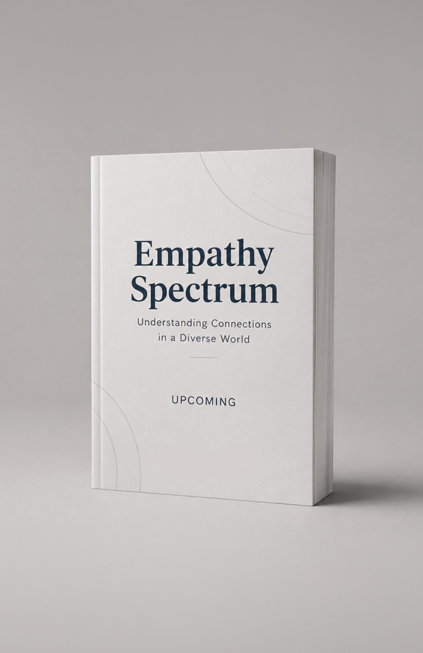

Child & Developmental Psychologist ·
Neurodiversity Researcher
I study how children think, feel, and connect with others — with a focus on social cognition in neurodiversity. My goal is simple: research that informs practice, and practice that changes lives.
I study how children think, feel, and connect with others — with a focus on social cognition in neurodiversity. My goal is simple: research that informs practice, and practice that changes lives.
I've always cared more about how someone came to feel or think something than what they think. That instinct was empathy, long before I had a word for it — and it became the question my career is built around.
I am a child and developmental psychologist and an incoming Fulbright-Nehru Postdoctoral Research Fellow at the University of Virginia, USA. I've previously taught child development and research methods as an Assistant Professor at SGT University, Gurugram, and Azim Premji University, Bhopal.
My doctoral work at the University of Delhi, under Prof. Nandita Babu, developed animated video-based measures of empathy in children — neurotypical and neurodivergent, with a focus on autism spectrum disorder. My broader research sits in social cognition and neurodiversity-affirming practice — the belief that different does not mean deficient.
I'm currently writing my first book, The Empathy Spectrum: Understanding Connections in a Diverse World, under contract with John Wiley & Sons.
Empathy has never stayed on the page for me. It's the same instinct that sends me looking for the story behind a child's silence, that shapes how I teach and mentor, and that quietly sits underneath every dataset I analyse.

My research sits at the intersection of child, developmental, and cognitive psychology — investigating how children develop the capacity for different socio-cognitive abilities, and what happens when that development follows a different path.
Understanding how cognitive and affective empathy develop in children with ASD, ADHD, and intellectual disability — and designing interventions to support empathy growth.
Exploring communication support practices in children with autism spectrum disorder by adapting frameworks from neurodiversity-affirming contexts.
Investigating the developmental links between children's understanding of others' mental states and their capacity for moral evaluation of intentional versus accidental harm.
Developing animated, video-based tasks to assess empathy in young children — moving beyond parent-report toward more ecologically valid, child-friendly measures.
Synthesizing evidence across studies to map the landscape of empathy research in autism and related domains, with published meta-analytic work in Q1 journals.
Exploring how family dynamics and peer relationships shape adolescent development in the Indian context — including parenting during COVID-19 and across neurodiversity.
A comprehensive quantitative synthesis of research on empathy in autism spectrum disorder, examining how age, culture, and measurement type shape findings across studies.
Q1 Journal · IF 3.8 — View PaperThe development of a novel animated, video-based task to assess empathy in neurotypical and neurodivergent children — the methodological core of my doctoral research.
Original InstrumentUnderstanding Connections in a Diverse World — my forthcoming book with John Wiley & Sons, exploring empathy across neurotypes, cultures, and human contexts.
Wiley & Sons — Pre-order NowI teach across undergraduate, postgraduate, and doctoral levels — translating complex psychological concepts into engaging, research-informed classroom discussions.
Government of India–U.S. academic exchange program for postdoctoral research at the University of Virginia, 2026–27 cycle.
Selected as one of five psychologists from across India by the National Academy of Psychology at the 34th Annual Convention.
Selected as one of 40 early-career psychologists globally by the International Union of Psychological Sciences — 33rd International Congress of Psychology, Prague.
Selected for professional development and leadership training by LedBy Foundation, India.
Invited to present at the 4th International Congress on Future Neurology and Advances in Research and Treatment of Brain Disorders, Paris.
Qualified the Junior Research Fellowship with 99.82 percentile — ranked in the top 0.2% nationally.
Whether you need research guidance, a keynote speaker, or expert input on child development — pick a session and book a time that works for you.
Discuss potential partnerships, co-authored studies, or joint grant applications in empathy, social cognition, or neurodiversity research.
Book This SessionExplore availability for talks at your conference, university, or organization on empathy development, neurodiversity, or research methods.
Book This SessionGuidance on dissertation design, publishing strategy, systematic reviews, or navigating early-career academia. For grad students and researchers.
Book This SessionAdvisory input for media, nonprofits, schools, and policy teams working on child development, autism, or inclusive education.
Book This SessionSessions powered by Topmate.io — secure booking & payments via Razorpay/UPI
Whether you're a fellow researcher, a student exploring developmental psychology, or a journalist covering neurodiversity — I would love to hear from you.